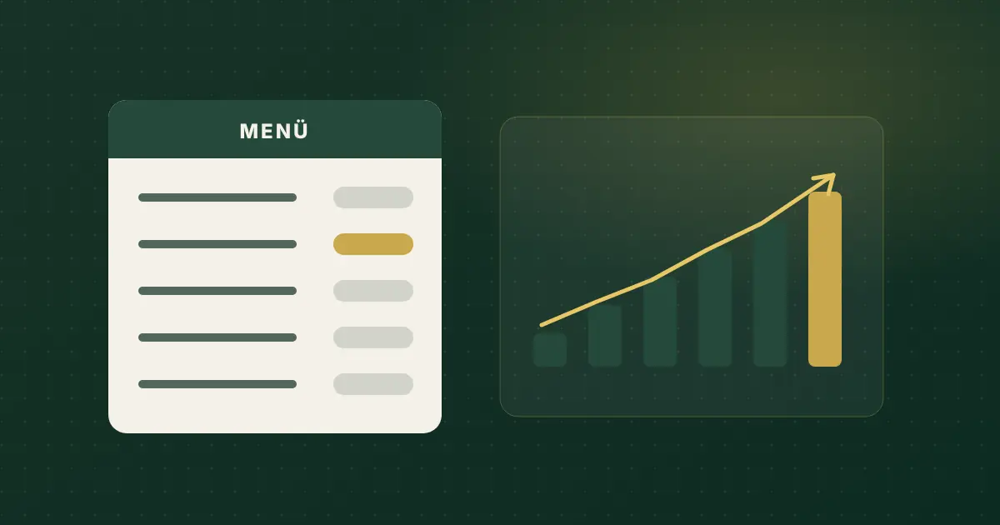

Restoranlarda Fiyat Artışı Menüye Nasıl Yansıtılır? Misafiri Kaçırmadan Zam Rehberi
Girdi maliyetleri her ay değişirken menü fiyatını aynı tutmak kârı eritir; tek seferde büyük zam ise misafiri ürkütür. Aradaki yol, ürün bazında ve verilerle karar vermektir.

Kısa cevap
Fiyat artışını menünün tamamına aynı oranda yansıtmak yerine ürün bazında karar verin: önce maliyeti en çok artan ve en çok satan ürünleri hesaplayın, artışı küçük ve düzenli adımlarla yapın, porsiyon ve kombo seçenekleriyle misafire alternatif bırakın. Fiyat listesini her değişiklikte güncel tutmak yasal zorunluluktur.
Fiyat artışı neden bu kadar zor bir karar?
Restoran sahibi iki baskı arasında kalır. Bir yanda et, süt ürünü, yağ, enerji ve kira gibi kalemler düzenli olarak artar. Öbür yanda misafir, her ziyaretinde fiyatın değiştiğini gördüğünde güvenini kaybedebilir. Zammı geciktirmek, artan maliyetin kârdan ödenmesi demektir; aceleyle ve toptan yapılan zam ise müdavim kaybı riskini büyütür.
Bu yüzden asıl soru "zam yapmalı mıyım?" değil, "hangi ürüne, ne kadar ve nasıl?" sorusudur. Bu soruya cevap vermek için önce elinizdeki rakamları netleştirmeniz gerekir.
1. Adım: Ürün maliyetini tek tek çıkarın
Menüdeki her ürünün bir reçetesi vardır: hangi malzemeden ne kadar kullanıldığı. Malzemelerin güncel alış fiyatı bu reçeteyle çarpıldığında ürünün maliyeti ortaya çıkar. Satış fiyatından bu maliyeti çıkardığınızda ürün başına kalan katkıyı görürsünüz.
- Reçeteyi gramajla yazın. "Bir avuç peynir" değil, "60 g peynir". Ölçü belirsizse maliyet de belirsizdir.
- Fire payını ekleyin. Ayıklama, pişirme kaybı ve bozulma maliyetin parçasıdır.
- Alış fiyatını güncel tutun. Geçen ayın faturasıyla hesaplanan maliyet bugünün kararını yanıltır.
Bu hesabı defterde ya da tabloda yapabilirsiniz. QR Menu Official'ın Plus paketinde maliyet ve reçete ekranı, malzeme fiyatlarını ve ürün reçetelerini girdiğinizde ürün maliyetini sizin verinizle hesaplar. Sistem maliyeti kendisi bilmez; doğru sonuç, girdiğiniz verinin doğruluğuna bağlıdır.
2. Adım: Zammı hangi ürüne yapacağınıza karar verin
Bütün menüye aynı oranda zam yapmak kolaydır ama adil değildir. Bazı ürünlerin maliyeti hiç değişmemişken bazılarınınki ciddi artmış olabilir. Ürünleri iki soruyla ayırın: Maliyeti ne kadar arttı? ve Ne kadar satıyor?
| Durum | Önerilen yaklaşım |
|---|---|
| Maliyeti çok arttı, çok satıyor | Küçük ve kademeli artış; porsiyonu ya da sunumu gözden geçirin. |
| Maliyeti çok arttı, az satıyor | Fiyatı maliyete göre güncelleyin ya da menüden çıkarmayı değerlendirin. |
| Maliyeti az arttı, çok satıyor | Fiyatı koruyun; menünün "güven ürünü" olarak kalsın. |
| Maliyeti az arttı, az satıyor | Fiyattan önce görünürlüğe bakın: açıklama, fotoğraf, menüdeki yeri. |
Bu ayrımın sistemli hali menü mühendisliğidir. Ayrıntısını menü mühendisliği rehberimizde anlattık.
3. Adım: Artışı nasıl yapacağınızı seçin
Küçük ve düzenli adımlar
Uzun süre bekleyip tek seferde büyük zam yapmak, misafirin fark etme ihtimalini en yüksek hale getirir. Maliyet değiştikçe küçük güncellemeler yapmak hem kârı korur hem de "bir anda her şey pahalandı" algısını azaltır.
Porsiyon ve seçenek sunmak
Aynı ürünü küçük ve büyük porsiyonda sunmak, fiyata hassas misafire bir kapı açık bırakır. QR Menu Official'da porsiyon ve ekstra tanımları Restoran Menü modülünde Temel paketten itibaren vardır.
Kombo ve kampanya
İçecek, yan ürün ve ana yemeği bir arada sunan kombolar, tek tek ürün fiyatlarının artışını misafir açısından daha anlaşılır kılabilir. Kampanyaları süreli ve net koşullarla anlatın; "her zaman indirim" algısı yaratmayın.
Ürünü yeniden tasarlamak
Bazen fiyatı artırmak yerine reçeteyi gözden geçirmek daha doğrudur: pahalanan bir malzemenin yerine benzer kalitede başka bir malzeme, garnitürün değiştirilmesi ya da sunumun sadeleşmesi. Misafire söz verdiğiniz kaliteyi düşürmeden yapılırsa bu, fiyatı korumanın dürüst bir yoludur.
Misafire nasıl anlatmalı?
- Gizlemeyin. Fark edilmeden yapılan porsiyon küçültme, fark edildiğinde zamdan daha çok güven kaybettirir.
- Garsonu hazırlayın. "Neden pahalandı?" sorusuna kısa ve dürüst bir cevap verebilmeli.
- Değeri gösterin. Ürün açıklamasında malzemenin kaynağını ve hazırlanışını anlatmak, fiyatın neye karşılık geldiğini görünür kılar.
Fiyat listesini güncel tutmak bir zorunluluk
Fiyat Etiketi Yönetmeliği'ne göre yiyecek-içecek işletmeleri fiyat listesini misafirin görebileceği şekilde bulundurmak zorundadır; 2025 değişikliğiyle masada karekodla gösterim de mümkün hale gelmiştir. Fiyat değiştiğinde basılı menüyü yeniden bastırmak hem masraflı hem yavaştır; bu süre boyunca masadaki fiyatla kasadaki fiyat çelişebilir. Panelden yönetilen bir QR menüde fiyat ürün kaydında değişir ve aynı karekod güncel menüyü açar. Kuralların ayrıntısı için karekodla fiyat listesi rehberine bakın.
Bu yazı genel bilgilendirmedir, hukuki görüş değildir. Güncel kurallar için Ticaret Bakanlığı duyurularını esas alın.
Zam öncesi kontrol listesi
- Her ürünün güncel maliyetini reçeteyle hesapladım.
- Maliyeti en çok artan ve en çok satan ürünleri ayırdım.
- Artışı ürün bazında ve küçük adımlarla planladım.
- Fiyata hassas misafir için porsiyon ya da kombo seçeneği bıraktım.
- Garsonları değişiklik hakkında bilgilendirdim.
- Masadaki, kapıdaki ve dijital menüdeki fiyatları aynı anda güncelledim.
Fiyatları tek ekrandan güncellemek ister misiniz? Paketleri karşılaştırın; menü ve fiyat yönetimi Temel paketten itibaren dahildir.
Paketleri İnceleSık sorulan sorular
Restoranda zam ne sıklıkla yapılmalı?
Sabit bir takvim yerine maliyet değişimine bakın. Maliyet belirgin şekilde arttığında küçük ve ürün bazında güncellemeler, uzun aralıklarla yapılan büyük zamlardan daha az fark edilir.
Bütün menüye aynı oranda zam yapmak doğru mu?
Genellikle hayır. Ürünlerin maliyet artışı farklıdır. Ürün bazında maliyet ve satış adedine bakarak karar vermek hem daha adil hem daha kârlıdır.
Porsiyon küçültmek zam yerine geçer mi?
Misafire açıkça söylenirse bir seçenek olabilir. Fark ettirmeden yapılan porsiyon küçültme, fark edildiğinde güven kaybına yol açar.
Fiyat değiştiğinde QR kodu yeniden basmam gerekir mi?
Panelden yönetilen bir QR menüde hayır. Fiyatı ürün kaydında değiştirirsiniz; aynı karekod güncel fiyatı gösterir.
QR Menu Official ürün maliyetini kendisi hesaplar mı?
Plus paketindeki maliyet ve reçete ekranı, sizin girdiğiniz malzeme fiyatları ve reçetelerle ürün maliyetini hesaplar. Veri girilmeden otomatik maliyet bilgisi üretmez.
Kaynaklar
- T.C. Ticaret Bakanlığı — Fiyat etiketinde yeni dönem başlıyor
- TÜİK — Tüketici fiyat endeksi verileri
- QR Menu Official — Menü Mühendisliği modül sayfası
Son kontrol: 15 Kasım 2026. Yazıda yer alan ürün özellikleri QR Menu Official'ın mevcut paket içeriğiyle sınırlıdır.